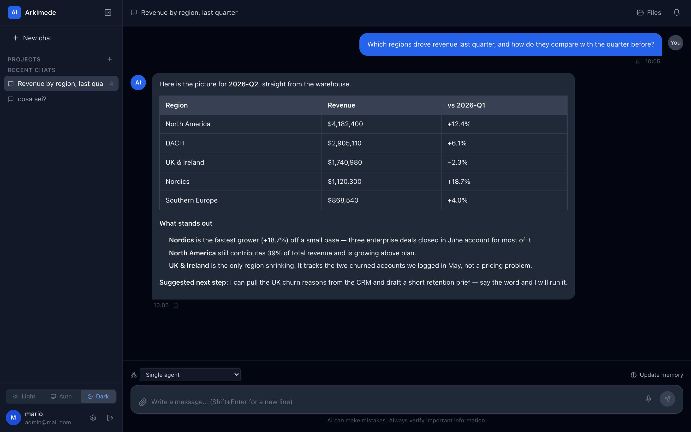
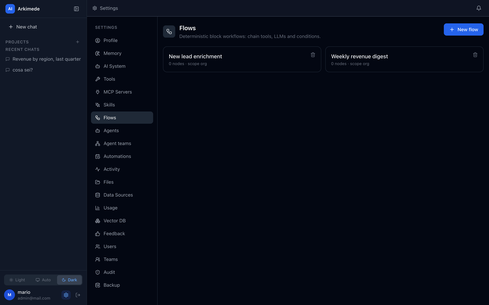
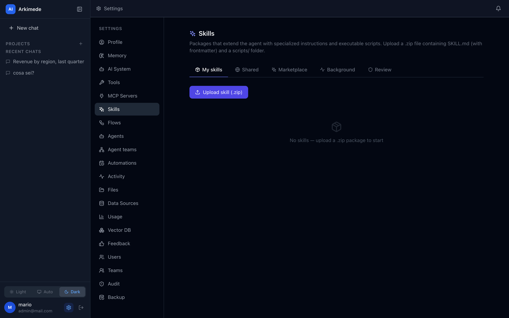
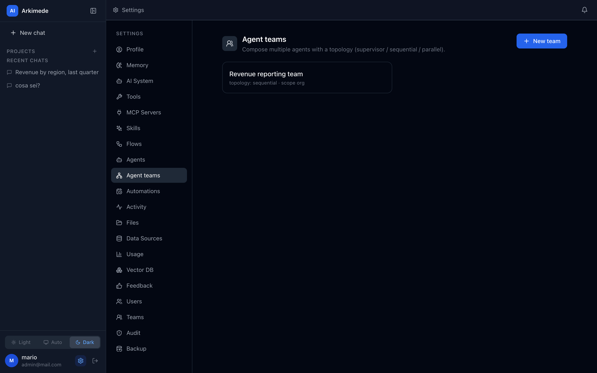

Your AI runs
inside your perimeter.
Agents, deterministic workflows and sandboxed custom code — for a whole organization, on infrastructure you control. Nothing leaves unless you say so.
git clone https://github.com/arkimedehq/arkimede
cd arkimede && ./scripts/install.sh
Watch it improvise, then watch it repeat.
The agent is asked which regions lost revenue. It picks the SQL tool, queries the warehouse, and answers. Then the same work — pull the numbers, write the digest, post it to the team — runs as a deterministic flow on a cron.
Most tools pick one lane. An organization needs all three.
You end up running a chat UI, plus an agent builder, plus a workflow automator — three deployments, three permission models, three places your data can leak. Arkimede is the one place that does all three, under a single multi-tenant governance model.
A chat UI
Great for talking to a model. It won't run your Tuesday-morning report on a cron.
An agent builder
Great for prototyping an agent. Its governance usually stops at one workspace.
A workflow automator
Great at deterministic pipelines. It doesn't improvise when the task is fuzzy.
Improvisation and repeatability, in the same system.
The four subsystems interconnect: a flow is a tool an agent can call, a flow can invoke an agent or a whole team, and an automation runs any of it headless on a schedule.
Stateful agents that pick their own tools
A LangGraph ReAct loop with your custom tools, MCP servers and RAG, on a four-layer system prompt. It decides what to call, calls it, and answers with the result.
Deterministic DAG workflows
A visual canvas with 12 node types — tool, LLM, condition, HTTP, skill, transform, sub-flow, agent, team, loop, join, chat. Trigger them manually, on a cron, by webhook, or from chat.
Agents composed into teams
Supervisor, sequential and parallel topologies. Any team can be exposed as a single tool, so delegation nests as deep as the work needs.
Executable code, safely
Install Python/Node/JS packages that run as real code in a hardened per-job container — cap-drop, read-only rootfs, non-root, egress allowlist, optional gVisor.
It's a product, not a demo.




Every power is declared, approved, and bounded by identity.
Untrusted third-party code runs here. So nothing is implicit and global: network, filesystem, SQL operations and local MCP processes are each a capability something has to be granted.
- netEgress allowlist. A skill reaches the network only through a proxy that knows which hosts it declared.
- exePer-job containers. cap-drop, read-only rootfs, non-root, optional gVisor — one container per run.
- fsPer-tenant filesystem. Access-aware paths; a tenant cannot read across the boundary.
- keyAES-256-GCM at rest. Authenticated encryption for secrets, with fail-fast on a missing key.
- ssrfSSRF guard. Cloud metadata, link-local and private ranges are blocked on every outbound integration.
- logStructured audit. Auth, admin, executions, files, SQL and MCP — each with a runs-as identity.
Run it this afternoon.
Docker and Docker Compose are the only prerequisites. The guided installer generates every secret, asks you to pick an isolation level, and brings the stack up. The first user to register becomes the admin.
git clone https://github.com/arkimedehq/arkimede
cd arkimede && ./scripts/install.sh